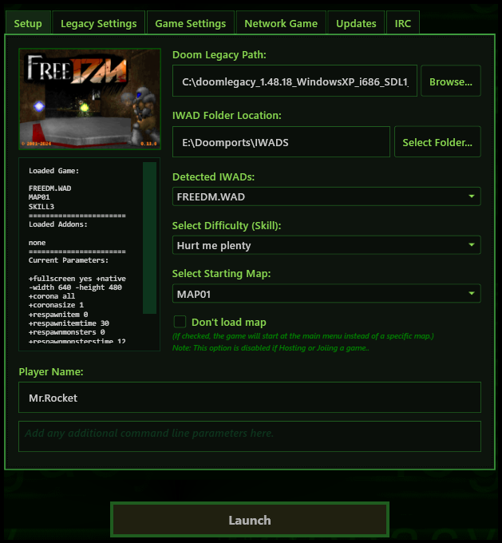
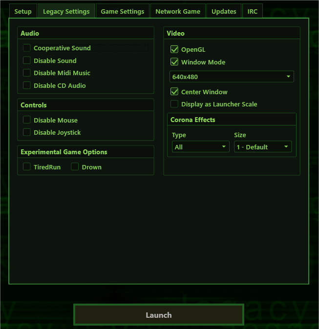
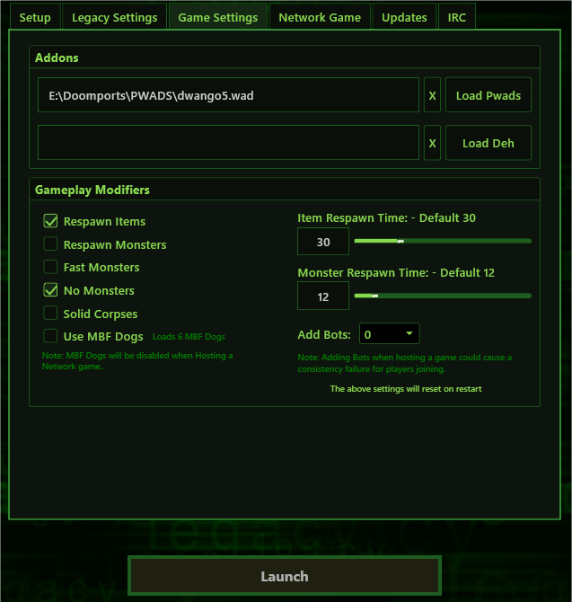
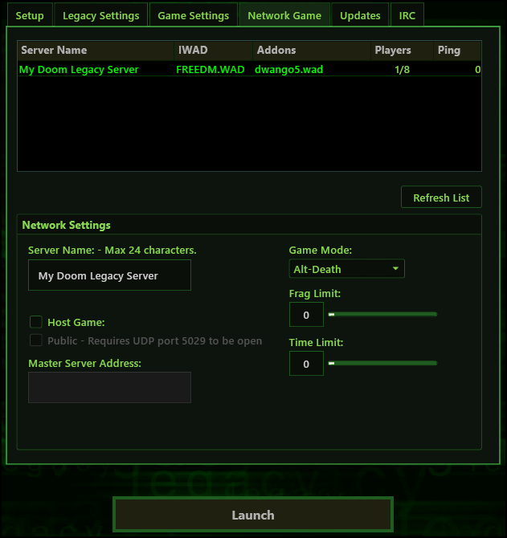
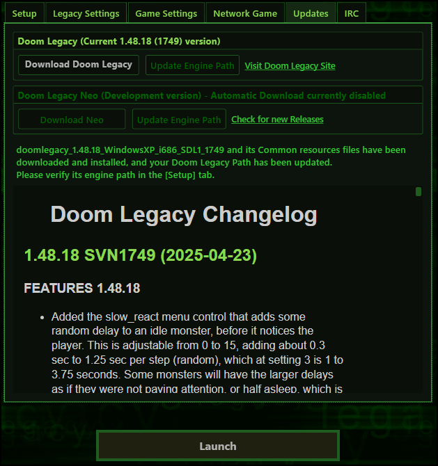
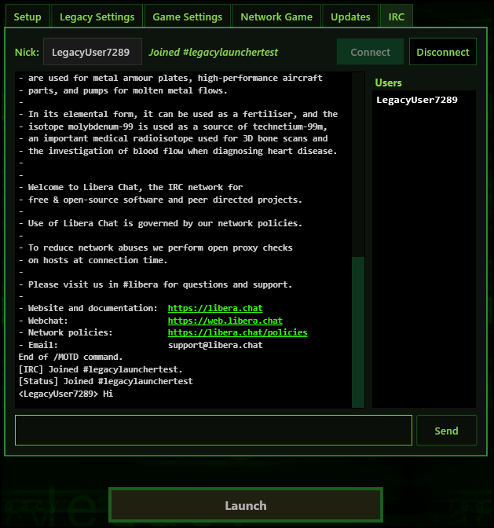

Getting Started: Doom Legacy Launcher 2 is a modern launcher designed for the Doom Legacy source engine. Built with simplicity and ease of use in mind, its functions are completely self-explanatory. When running the launcher for the first time, you will be greeted by the Setup tab. This is where you configure your Doom Legacy executable location, IWAD folder path, and basic game parameters before launching.
If you haven't downloaded Doom Legacy or don't have any Doom IWADs installed yet, simply navigate to the Updates tab. From there, you can download the latest Doom Legacy engine alongside free shareware or Freedoom IWADs. This feature will have you up and running in just two clicks!
Advanced settings can be found within the Legacy Settings tab and the Game Settings tab, where you can modify execution values or load additional file add-ons. To host or connect to multiplayer sessions, head over to the Network Game tab. When hosting matches online, remember to forward UDP port 5029 so your server shows up globally on the public master server tracker. To join an active session, simply double-click any item in the server list.
Finally, the launcher features an integrated IRC tab. This allows you to chat with other community members and coordinate match timings directly inside the client interface. Below is a somewhat detailed breakdown of each individual tab's layout capabilities.
Setup Tab:

- Doom Legacy Path: Direct link location pointer targeting your base executable file.
- IWAD Folder Location: Global asset directory location storing main data archives (.WAD).
- Detected IWADs Selector: Quick dropdown options listing all valid games found inside your library path.
- If the Paths are met, the launcher will inform you and or direct you to the Updates tab to download Doom Legacy or Shareware IWADs if needed.
- Once you have your location paths setup, and an IWAD is selected, both Skill and Maps Combo boxes will now be active displaying the Skill and proper list of given maps depending on the selected IWAD.
- The "Don't load map" check box is exactly that, if you check it, and click Launch, the game will load without spawning you in a map, and the first thing you'll see is the game's Title Screen but the setting still loads all other launcher settings. This setting has no affect for a Network game, since we will always load a map then.
- Player Name is obviously where you'd enter your Player Name to display in game. Note* this does not refect your IRC user name or Nick Name.
- As discribed in the Launcher, the field just below the Player Name is where you can enter any Additional Command Line Parameters with a - followed by a Command or a + followed by a Console variable, if wanted. ~ View the Doom Doom Legacy Docs for more infomation about these parameters.
Legacy Settings Tab:

The Legacy Settings tab is mostly populated with a lot of check box and combo box controls to enable or disable random parameters.
Audio being first where you'd mostly want to keep disabled or unchecked, but they are here incase you'd rather listen to your own music or just don't want to hear anything at all, or maybe just for testing. The same pretty much goes for the Controls, Disable Mouse and Disable Joystick will usually go unchecked. The Experimental Game Options are mostly here for testing new features recently added to Doom Legacy. Try them out and see if you like them! More will likely be added to future versions of the Launcher. This now brings us to the Video settings. These will likely become the most usful settings in the this tab, where obviously we'll select OpenGL and Window Mode video resolutions. The Center Screen check box is a Launcher feature, since on Windows anyway, and in windowed mode, Doom Legacy will end up being displayed in the upper left corner of your screen without it. When checked, the Launcher will try to force Legacy's game window to the center of your screen. You can also set the window to scale to the size of the Launcher using the Display as Launcher Scale, if wanted. Now for the Conrona Effects controls. They allow you to changed the Type and Size of Legacy's classic spherical glow effects we see attached to the games light sources like candles, electric lamps and torches.
This tab is mostly left empty for two reasons. Some settings can only be changed in game, and room has been made for future additional controls.
^ Back to TopGame Settings Tab:

TODO:
Add PWAD .wad or Dehacked .deh files here. As well as gameplay adjustments. Notice we can enable MBF Dogs and add Bots on the fly!
Network Game Tab:

Host or Join Network Games:
Double-click servers in the server list to connect, or host your own local area network (LAN) and public internet games.
As mentioned in the launcher itself, you will need to forward port 5029 UDP when hosting a public game so your server is visible to the public. You may want to go ahead and forward the port number for TCP as well. Most of the time, forwarding TCP isn't necessary because PWADs are downloaded directly through the launcher. However, if the server is hosting a customized .Deh file and the file cannot be found, Doom Legacy will try to download it internally. This process requires a TCP connection for its download stream instead of UDP.
The Master Server Address field can be left blank; it is mostly there for future use. Right now, the launcher utilizes its own database to store hosted server information and relay it back to the client's server list data grid so players can view active matches worldwide, and join them.
Updates Tab:

TODO:
Automated update scripts built to check version numbers, download launcher revisions, and retrieve free shareware assets directly over safe file mirrors.
IRC Tab:

TODO:
The launcher features an integrated, lightweight Internet Relay Chat (IRC) client that automatically links you to the community chatrooms. This section is designed to keep players connected without requiring external client programs.
- Auto-Connect: Joins the official Doom Legacy matchmaking channel immediately upon loading the tab panel.
- Match Coordination: Ideal for organizing coop sessions, challenging rivals to deathmatches, or checking server availability with active players.
- Chat Code of Conduct: All message transactions inside the text window are subject to our behavioral terms to prevent flooding or server harassment.